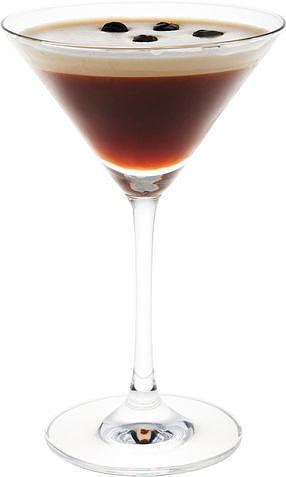

Эспрессо мартини

Это не настоящий мартини, поскольку в нем нет ни джина, ни вермута, но это один из многих напитков, в названиях которых используется термин "мартини". Одна из наиболее распространенных версий происхождения эспрессо мартини в том, что он был создан Диком Брэдселлом в конце 1980-х годов, когда он был в клубе Фреда в Лондоне, для молодой леди, которая попросила что-нибудь, что «разбудило бы меня, а затем трахнуло».